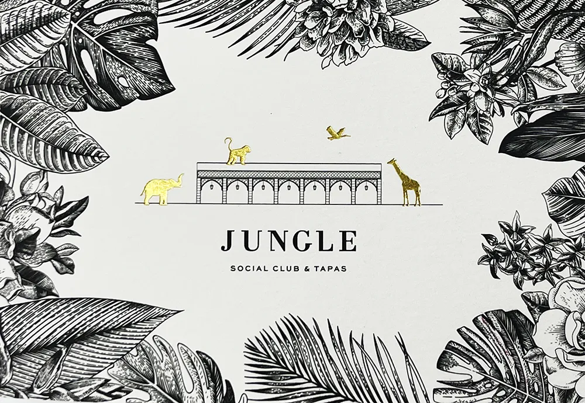

Embellissement des Imprimés
Dans nos ateliers de dorure et de marquage à chaud, nous disposons de plusieurs techniques de fabrication: nous pouvons utiliser un cylindre Heidelberg à l'ancienne, ou des techniques de pression plus récentes comme notre Cylindre Kama. Pour des effets encore plus originaux, nous proposons des réalisations ou vernis et dorure peuvent se mélanger grâce à notre machine digitale de dernière génération. Une très large gamme de couleurs est disponible et adaptée aux différents supports d’impression. On trouve des films métalliques ou des films pigments: les classiques, or, argent, cuivre, … ou des palettes plus modernes, ou des effets de diffraction. Vous trouverez plus d'idées dans notre galerie en suivant le lien ci-dessous.
Découvrez notre Galerie !Directprint rendra votre document unique en appliquant des techniques d'embellissement surprenantes !

Gaufrage
Ce procédé est simple consiste à donner du relief à vos supports par pression. Inséré dans un moule, votre support est pressé entre une partie gravée en creux, avec ou sans la contrepartie correspondante. Le gaufrage attire le regard et donne envie d’être touché, il est donc parfait pour mettre en relief votre logo ou un texte.

Dorure à chaud
La technique du marquage à chaud consiste à déposer un film métallique sur un papier coloré ou pré-imprimé. Bien qu’on l’appelle dorure à chaud, ce système d’impression existe dans de nombreux coloris : argent, or, mais également bleu, rouge, vert, etc.

Vernis 3D
Pour des effets encore plus originaux, nous proposons des réalisations ou vernis et dorure peuvent se mélanger grâce à notre machine digitale de dernière génération.